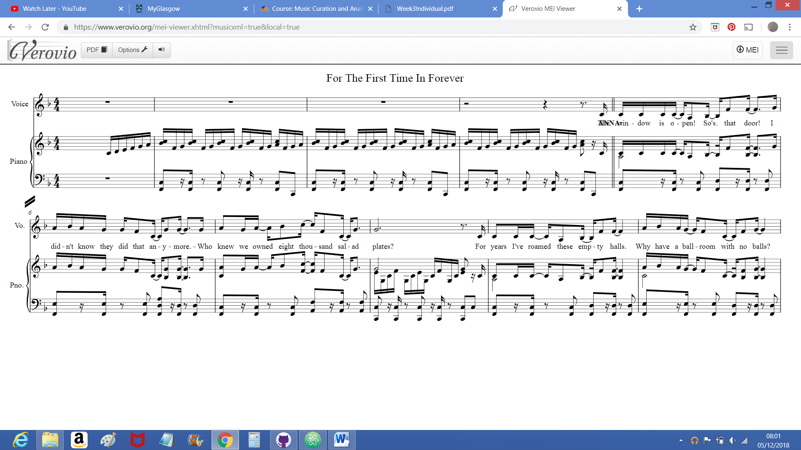

There are many curations of musical theatre music. The New York Public Library has a curation of acoustic music data which is notoriously difficult to gain access too. It is contained within the Theatre on Film and Tape Archive which films Broadway shows including musicals. The music is put into the context of the show. To access the data you have to be a student, academic or have access to the library through location. You can only have access to one show at a time and can only ever watch the show once. There is only one recording made and you have to be in a special room. This makes it incredibly difficult to compare shows as you cannot view more than one show at a time.
Another curating site Internet Broadway Database (IBDB) has descriptive data. It has a record of many Broadway shows, the songs performed, information about the cast recording (such as producers, artists, number of songs and date of release) and composers. This database tries to give all the descriptive information needed to be able to find the music within any particular show.
The library at the University of Illinois at Urbana-Campaign has many notated scores for musical shows. However, the available notated scores available online are from old or never performed musicals. Copyright prevents a lot of newer or more popular musicals from allowing their notated musical scores to be made freely available in an online archive. A more complete collection is the Hal Leonard online shop which allows you to view the first few pages of notated music from a music book. To view the whole book it has to be purchased.
None of these sites analyse the music in any form. However, the acoustic data is analysed by a professional musician Seth Rudetsky. On YouTube Seth on the YouTube channel Playbill and hosts his own show ‘Seth Rudetsky Deconstructs’ where he analyses the instrumental parts of the music and the vocal element of the music in Broadway musicals. He compares the song he is currently analysing to other music from different shows, showing patterns in decades across musical theatre. He also shows some of the conscious or maybe subconscious inspirations for the music or lyrics of a particular song by drawing attention to the patterns within the music. By analysing the music in this format he reaches more people in a user friendly format.
New York Public Library (Theatre on Film and Tape Archive) – Acoustic
IBDB (Internet Broadway Database) – Descriptive
University of Illinois at Urbana-Campaign (University Library) – Notated
YouTube – Playbill – Seth Rudetsky Deconstructs – Acoustic


MusicXML
MEI
The MEI in Verovio

Changed MEI
Verovio would not render this changed MEI file